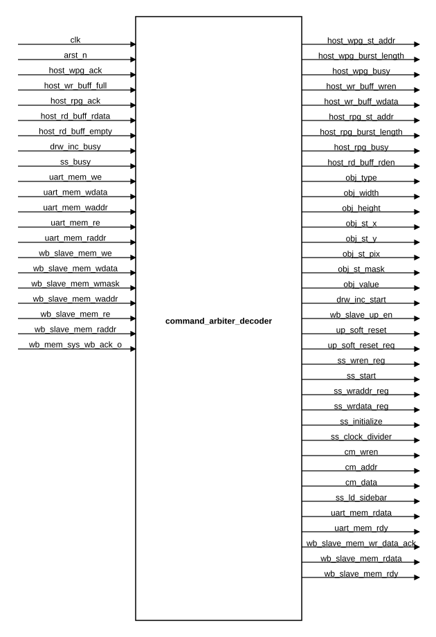
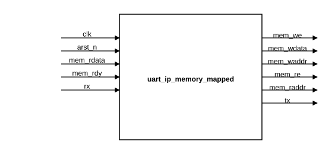
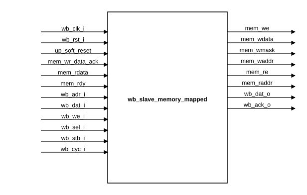
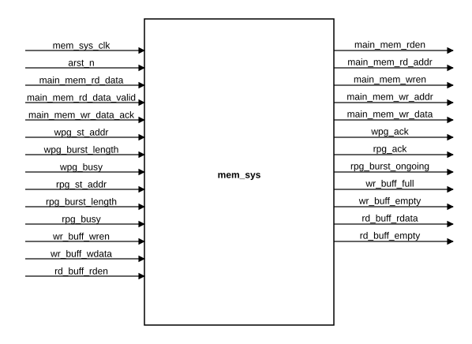
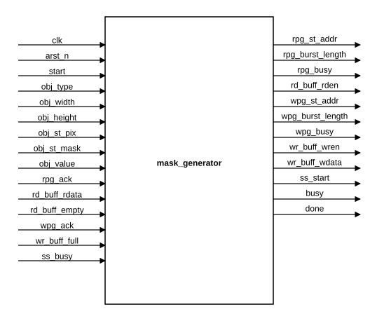
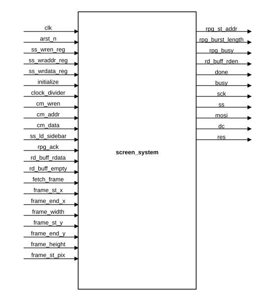
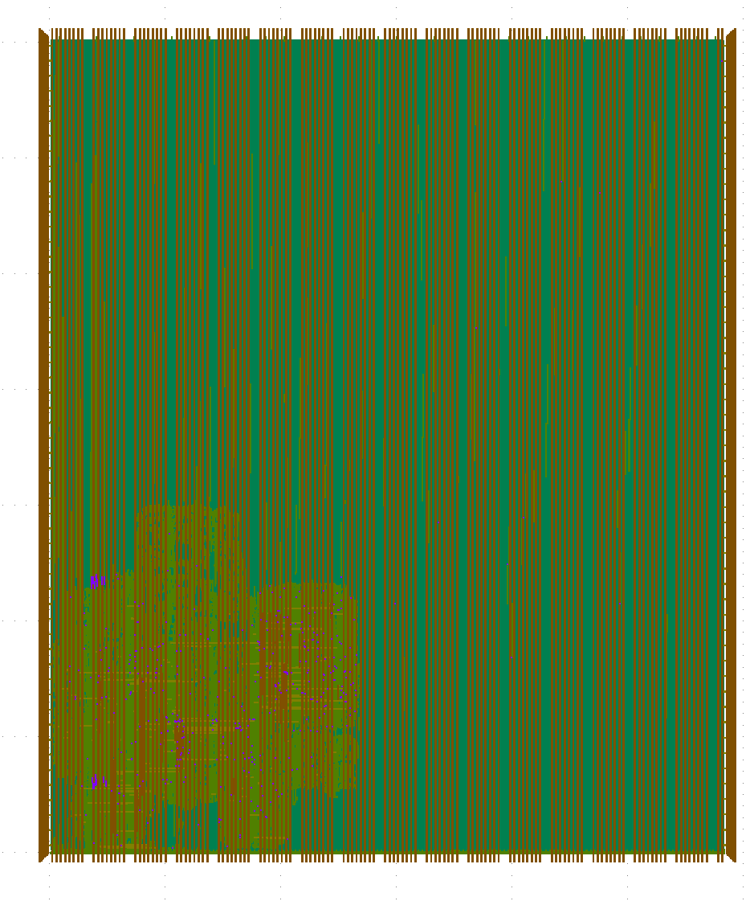
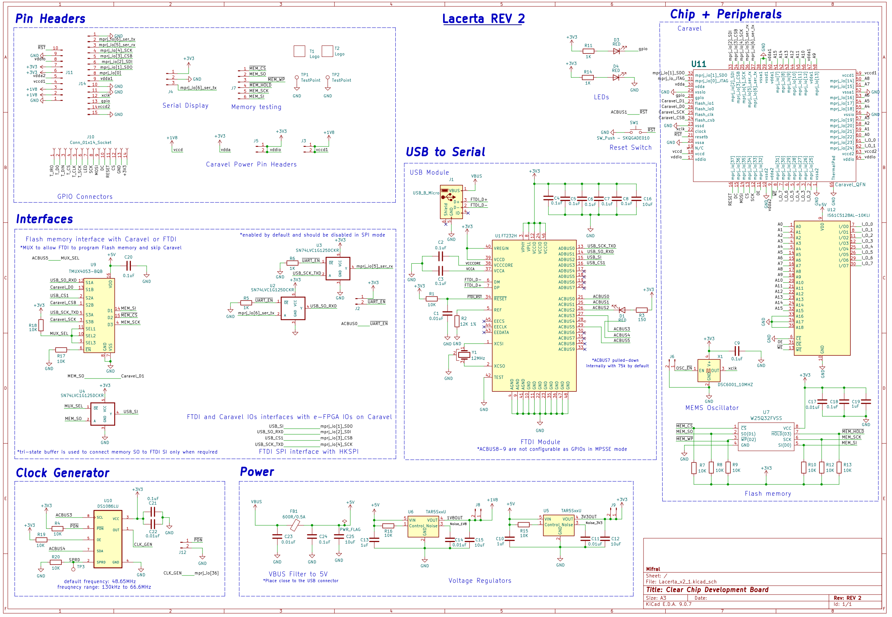
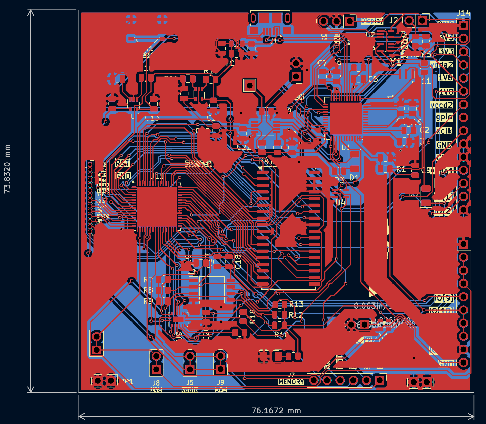

System Development
The development of the Lacerta platform spans the complete hardware and software realization flow, from digital design and verification to physical implementation and system-level integration. This section describes the main stages used to transform the Lacerta concept into a functional platform, including RTL design, verification, layout generation, gate-level validation, PCB development, and the creation of the interface design software.
Together, these activities define the engineering workflow followed to implement, test, and deploy Lacerta as an open-source embedded graphical interface system. Each subsection highlights a different part of this process and explains how the individual development tasks contribute to the final platform.
Lacerta RTL
System Purpose
The system is designed to display graphical HMI content on a TFT screen and to update only the screen regions that change.
At a functional level, the system must:
- receive commands and image-related data,
- store image bytes and mask bytes in external SRAM,
- modify selected objects inside the stored image,
- fetch the corresponding pixel data,
- convert logical pixel information into display colors,
- and transmit the final bytes to the TFT controller.
The design is organized around a shared memory architecture. Instead of each module touching the SRAM directly, all active clients use a common memory subsystem with buffered read and write channels, as shown in the figure below.

Figure 5. Block diagram of the Lacerta ASIC inside the Caravel environment. The figure shows how UART data and the embedded Caravel RISC-V processor interact through the Wishbone-connected control path, rendering logic, and memory subsystem; the updated frame data is then read by the display output block to drive the screen.
High-Level Functional Flow
The complete display flow is:
- A host or processor sends control commands or image data.
- The command path decodes the request and either:
- writes data into the shared memory system,
- updates display-related configuration,
- or starts a drawing operation.
- The memory subsystem transfers bytes between internal buffers and external SRAM.
- If an HMI object changes,
mask_generatorreads the corresponding image region, updates the stored bytes, and writes the modified data back into SRAM. - Once the image region is ready,
screen_systemrequests the affected window from memory. tft_control_fsmstreams TFT commands and pixel bytes throughspi_master.- The TFT receives only the updated region instead of a full-screen redraw.
This makes the system well suited for dashboards, indicators, bars, graphs, and symbolic objects that change frequently in small areas.
Top-Level Integration (User Project Wrapper)
dig_top.v
dig_top is the main integration point of the RTL system.
It connects:
- the UART interface,
- the Wishbone interface,
- the external SRAM,
- the TFT SPI pins,
- the shared memory subsystem,
- the drawing engine,
- and the display engine.
Its main functional job is to route requests from several clients into the memory system and to coordinate which subsystem is producing or consuming pixel data.
The clients connected to the shared memory system are:
- UART host write path,
- UART host read path,
- screen-system read path,
- drawing-engine read path,
- drawing-engine write path,
- Wishbone memory read path,
- Wishbone memory write path.
Inside dig_top, each client is assigned to a dedicated buffer slot. The top-level combinational logic packs the individual requests into the vectors expected by mem_sys.
dig_top also derives the frame-update rectangle used by the display block:
frame_st_xframe_end_xframe_widthframe_st_yframe_end_yframe_heightframe_st_pix
These values are taken from the drawing object parameters so that, after a drawing operation, the correct screen region can be refreshed automatically.
Another important top-level task is Wishbone routing. dig_top chooses whether a Wishbone transaction goes to:
wb_slave_memory_mappedfor control/MMIO accesses,- or
wb_slave_to_mem_sys_portsfor direct SRAM-backed data accesses.
Command and Control Path
command_arbiter_decoder.v

Figure 6. Block diagram of the command_arbiter_decoder module, showing how UART and Wishbone control transactions are decoded into drawing, screen, memory-access, and processor-control signals.
command_arbiter_decoder is the central command interpreter of the system.
It receives internal memory-mapped requests from two sources:
- the UART path,
- the Wishbone MMIO path.
It translates those requests into internal control actions for the rest of the design.
Its outputs control four main areas:
-
Host memory access
It drives the UART-side read and write burst controls used to move data between the host and SRAM. -
Drawing configuration
It loads: - object type,
- object width and height,
- object screen position,
- starting pixel address,
- starting mask address,
- object value,
-
and the drawing start pulse.
-
Screen configuration
It programs: - TFT SPI clock divider,
- screen initialization memory entries,
- color-mapping table entries,
- sidebar-load requests,
-
and direct screen-refresh requests.
-
Processor management
It controls: - processor memory-path enable,
- software reset request,
- and the safe generation of
up_soft_reset.
The UART address map and Wishbone MMIO map are decoded inside this block. A write to a given mapped address becomes a specific internal action. For example, some addresses configure object geometry, others load TFT initialization entries, and others trigger drawing or screen refresh.
Functionally, this module acts like the control plane of the system. It does not process pixels itself. Instead, it converts host or processor requests into the control pulses and configuration values needed by the memory, drawing, and display engines.
UART Communication Path
uart/uart_ip_memory_mapped.v

Figure 7. Block diagram of the uart_ip_memory_mapped module, showing the UART packet-decoding path and its conversion into internal memory-mapped read and write transactions.
This module is the serial front-end used by an external host.
It presents a simple internal interface:
mem_wemem_wdatamem_waddrmem_remem_raddrmem_rdatamem_rdy
Through this interface, the rest of the RTL can treat UART traffic as ordinary memory-mapped transactions.
uart/uart_ip_memory_mapped_ctrl_fsm.v
This FSM decodes the byte stream received through UART and translates it into internal read and write requests. It is responsible for packet interpretation and for sequencing the response path when read data must be returned.
uart/uart_ip.v
This module wraps the low-level UART transceiver logic. It combines the receiver, transmitter, and control/status registers into one UART peripheral.
Supporting UART Modules
The remaining UART modules implement the details of the serial link:
uart_recv.vsamples incoming serial bits and reconstructs bytes.uart_tnsm.vshifts outgoing bytes onto the TX line.uart_clk_gen.vgenerates the timing enables used by receive and transmit logic.uart_control_reg.vstores control settings.uart_status_reg.vstores UART status flags.uart_two_ff_synchronizer.vsynchronizes asynchronous input behavior.uart_edge_detector.vdetects transitions used by the receiver path.
Together these modules form the host command entrance to the system.
Wishbone Control and Memory Paths
wb_slave/wb_slave_memory_mapped.v

Figure 8. RTL block diagram of the wb_slave_memory_mapped module, showing the Wishbone slave interface, the internal memory read/write control signals, and the acknowledge/data return path used for memory-mapped transactions.
This module converts Wishbone bus transactions into internal control transactions.
Its function is straightforward:
- on a Wishbone write, it captures address, data, and byte mask and asserts the internal write request,
- on a Wishbone read, it captures the address and asserts the internal read request,
- it waits for the internal acknowledge or ready signal,
- then it returns data and asserts
wb_ack_o.
This path is used for control-style operations rather than bulk image transfer. In practice, it gives a processor a way to configure objects, start updates, program the screen subsystem, and read status.
wb_slave/wb_slave_to_mem_sys_ports.v
This module is the direct Wishbone-to-memory bridge.
Its purpose is different from wb_slave_memory_mapped: instead of controlling registers, it moves data between a Wishbone master and the shared memory subsystem.
Because the Wishbone side is 32 bits wide while the internal main memory path is 8 bits wide, this module must:
- break a 32-bit write into byte-oriented transfers,
- or collect several byte reads and reassemble them into one Wishbone word.
For writes, it:
- loads the write start address,
- requests a write burst,
- pushes the write data into the selected write buffer,
- waits for
wpg_ack, - then acknowledges the Wishbone transaction.
For reads, it:
- loads the read start address,
- requests a read burst long enough to rebuild one 32-bit word,
- consumes bytes from the read buffer,
- assembles them in
wb_dat_o, - and acknowledges only when the full word is ready.
This module is the processor-side path for direct image-memory access.
Shared Memory Subsystem
memory_system/mem_sys.v

Figure 9. Block diagram of the mem_sys module, showing the shared memory architecture, including read/write buffers, arbitration logic, and the interface between multiple clients and external SRAM.
mem_sys is the core shared-memory manager.
It sits between all clients and the physical SRAM interface. Its role is to isolate clients from SRAM timing and to arbitrate memory traffic through buffered burst-based transfers.
The subsystem has two major data directions:
- read path: SRAM to read buffers,
- write path: write buffers to SRAM.
Clients do not directly perform random reads and writes. Instead, each client provides:
- a start address,
- a burst length,
- a busy/start indication,
- and buffer read or write activity.
mem_sys then coordinates the actual memory movement and generates acknowledgements when bursts complete.
memory_system/buffers.v
This module instantiates all FIFOs used by the shared memory system.
There are two buffer groups:
-
Write buffers
Producers place bytes here before those bytes are committed into SRAM. -
Read buffers
Consumers receive bytes here after those bytes are fetched from SRAM.
The buffering is important because each client runs according to its own local state machine, while SRAM access is shared. The FIFOs absorb timing differences and allow burst transfers to proceed without forcing all blocks to be cycle-by-cycle synchronized.
memory_system/sfifo.v
sfifo is the generic synchronous FIFO used to build the read and write buffers.
It provides the basic queueing behavior required for:
- temporary storage,
- empty/full protection,
- and rate decoupling between clients and memory arbitration logic.
memory_system/buffers_filler.v
This block manages the memory read direction.
Its functional sequence is:
- Watch all read-request channels.
- Detect when a client has started a burst read by asserting its
rpg_busy. - Capture the burst start address and length.
- Select a channel that still needs data.
- Issue SRAM reads through
main_mem_rdenandmain_mem_rd_addr. - Write the returned byte into the selected read buffer.
- Decrement the remaining burst length.
- Assert the corresponding
rpg_ackwhen the burst is complete.
It also tracks whether a burst is ongoing per client through rpg_burst_ongoing.
One practical effect of this design is that the screen path, drawing path, UART path, and Wishbone path can all use the same SRAM read port without each building its own direct SRAM controller.
memory_system/buffers_discharger.v
This block manages the memory write direction.
Its functional sequence is:
- Watch all write-request channels.
- Detect when a client has started a burst write by asserting its
wpg_busy. - Capture the burst start address and length.
- Select a channel whose write buffer contains data.
- Present the selected byte on
main_mem_wr_data. - Assert
main_mem_wrenand wait formain_mem_wr_data_ack. - Advance the address and remaining-burst count.
- Assert
wpg_ackwhen the full burst has been stored.
This turns buffered client writes into ordered SRAM transactions.
memory_system/sram_controller.v
sram_controller is the physical SRAM interface adapter.
It converts the abstract memory signals from mem_sys into SRAM pin behavior:
sram_addrsram_data_outsram_data_oebsram_oe_nsram_we_n
Its current behavior is simple and direct:
- reads have priority over writes,
- write acknowledge is generated when a write is active and no read is taking priority,
- read data is sampled from the SRAM input and returned synchronously through
main_mem_rd_data, main_mem_rd_data_validis pulsed when the sampled read byte is valid.
This module is the final bridge between internal logic and the external memory device.
Drawing Engine
drawing/mask_generator.v

Figure 10. Block diagram of the mask_generator module, showing the read-modify-write drawing flow used to update image regions in memory and trigger partial screen refreshes.
mask_generator is the hardware block that updates objects inside the stored image.
It does not generate a full image from scratch. Instead, it performs a controlled read-modify-write operation over a specific rectangular region already stored in SRAM.
Its main inputs are:
startobj_typeobj_widthobj_heightobj_st_pixobj_st_maskobj_value
Its outputs connect directly to one read channel and one write channel of the shared memory subsystem.
Functional Behavior of mask_generator
When start is asserted:
- The module loads the object geometry and starting addresses.
- It identifies the object mode from
obj_type. - It starts the necessary memory bursts.
- It processes the object row by row.
- It reads existing image bytes from SRAM through its read buffer.
- It computes the updated byte according to the object mode.
- It writes the updated byte back through its write buffer.
- When the region update is complete, it triggers the screen refresh path.
Supported Drawing Modes
The mode selected by obj_type determines how the pixel byte is modified:
-
BOOLEAN_TYPE
Used for simple on/off style behavior. -
HORIZONTAL_INCREMENTAL_TYPE
The object value is compared against the current column count, so the visible state progresses across the width of the object. -
VERTICAL_INCREMENTAL_TYPE
The object value is compared against the current row count, so the visible state progresses across the height of the object. -
GRAPH_TYPE
Used for graph-like updates where the stored state is shifted and the new value affects the last part of the row behavior. -
MASK_TYPE
The module first reads mask bits from SRAM, stores them locally, and then applies those bits to the target image bytes.
Relation Between Drawing and Screen Refresh
After finishing the memory modification, mask_generator asserts ss_start.
This does not send pixels directly. Instead, it tells the screen subsystem that a region is ready to be fetched from memory and transmitted to the TFT. In other words:
mask_generatoredits the stored image,screen_systemdisplays the edited image.
This separation keeps the drawing logic independent from the SPI timing logic.
Screen Output Subsystem
screen/screen_system.v

Figure 11. Block diagram of the screen_system module, showing the interaction between the TFT control FSM, the SPI master, the color-mapping table, and the memory-read interface used to send image data to the TFT screen.
screen_system is the top block for TFT output.
It integrates three specialized modules:
tft_control_fsmspi_mastercolor_mapping_table
This block has two main responsibilities:
- configure and initialize the TFT controller,
- send image data from SRAM to the TFT after a refresh request.
screen/tft_control_fsm.v
This is the main controller for the display side.
It coordinates:
- initialization-memory access,
- SPI byte transmission,
- memory reads for pixel fetch,
- color-map lookup,
- frame-window programming,
- sidebar transfer,
- and completion signaling.
TFT Initialization Flow
The module contains a small initialization memory, written by the control path through:
ss_wren_regss_wraddr_regss_wrdata_reg
Each entry stores a 2-bit type plus an 8-bit value. The type identifies whether the entry represents:
- a TFT command,
- TFT data,
- or a delay.
During initialization, tft_control_fsm steps through this memory and sends the correct sequence to the display. It also manages reset timing through res and an internal millisecond delay mechanism.
Frame-Refresh Flow
When fetch_frame is asserted, the FSM:
- receives the rectangle coordinates and size,
- sends the TFT column-address command,
- sends the TFT row-address command,
- sends the RAM-write command,
- starts a memory burst from
frame_st_pix, - reads the image bytes from its read buffer,
- converts or forwards pixel data,
- and streams the bytes to the TFT through SPI.
The rectangle can be smaller than the full screen, which is the basis of partial refresh behavior.
Active-Area Pixel Interpretation
For the active HMI area, the bytes read from SRAM are interpreted as compact pixel information rather than direct 16-bit RGB565 color.
The FSM extracts a color selector from each memory byte and sends that selector to color_mapping_table. The resulting 16-bit RGB565 value is then transmitted to the TFT as two bytes.
This reduces image-memory cost in the active area because each pixel consumes only one byte in SRAM while the final display still uses 16-bit color.
Sidebar Flow
The screen subsystem also supports a sidebar area.
For the sidebar, SRAM data is treated differently:
- each pixel uses two bytes,
- the bytes are sent directly to the TFT,
- and no color-map conversion is required.
The sidebar transfer starts when ss_ld_sidebar is asserted.
screen/color_mapping_table.v
This module stores the palette used by the active HMI area.
Its function is simple but important:
- write path: the control logic programs a 16-bit RGB565 color into an indexed entry,
- read path:
tft_control_fsmprovides a color index and receives the corresponding RGB565 value.
Because the palette is programmable, the same stored image codes can be associated with different real colors without rewriting the image bytes in SRAM.
screen/spi_master.v
This module is the byte transmitter for the TFT link.
It receives:
- a start/transaction request,
- a byte to send,
- and a clock-divider value.
It produces:
- SPI clock,
- chip select,
- MOSI output,
- busy/ack/done handshakes.
tft_control_fsm uses this block for every TFT command byte and every pixel byte. This keeps protocol sequencing in the FSM and bit-level serial shifting in a dedicated SPI block.
Functional Meaning of the Stored Image
The system uses SRAM not just as a raw frame buffer, but as a structured image store for the HMI.
The stored content includes:
- active-area image bytes,
- mask data for symbolic objects,
- sidebar pixel data,
- and potentially processor-accessible data regions.
Important parameters from defines.sv shape this organization:
- screen width: 320
- screen height: 240
- active screen width: 270
- sidebar width: 50
- color-map entries: 16
This means the active area and the sidebar are handled differently by the display logic.
End-to-End Operation Examples
Example 1: Loading image data from UART
- The host sends UART packets.
uart_ip_memory_mappedconverts them into internal writes.command_arbiter_decoderinterprets those writes as host memory-transfer commands.- The host write buffer receives the data bytes.
mem_sysschedules the write burst.buffers_dischargersends the bytes to SRAM throughsram_controller.
Example 2: Updating an HMI object
- The host or processor writes object parameters.
command_arbiter_decoderstores width, height, position, object value, and memory addresses.- A start command asserts
drw_inc_start. mask_generatorbegins a read-modify-write sequence.- The old bytes are fetched from SRAM through
mem_sys. - The updated bytes are written back to SRAM through
mem_sys. mask_generatorassertsss_start.screen_systemrefreshes the affected rectangle on the TFT.
Example 3: Refreshing the sidebar
- A control write asserts
ss_ld_sidebar. tft_control_fsmprograms the sidebar coordinates into the TFT.- It requests the corresponding SRAM burst.
- Two bytes per pixel are read.
- Those bytes are transmitted directly through
spi_master.
Main Functional Role of Each Major Module
dig_top: integrates the whole system and routes all subsystem interfaces.command_arbiter_decoder: converts UART/Wishbone commands into internal control actions.uart_ip_memory_mapped: converts UART packets into internal memory-mapped transactions.wb_slave_memory_mapped: converts Wishbone MMIO accesses into control transactions.wb_slave_to_mem_sys_ports: converts Wishbone data accesses into shared-memory bursts.mem_sys: arbitrates shared access to external SRAM.buffers: stores temporary read and write data for all clients.buffers_filler: fills read buffers from SRAM.buffers_discharger: empties write buffers into SRAM.sram_controller: drives the physical SRAM pins.mask_generator: updates image regions according to HMI object logic.screen_system: top display block for TFT output.tft_control_fsm: performs TFT initialization and region-based pixel transfer.color_mapping_table: converts compact pixel codes into RGB565 colors.spi_master: serializes commands and pixel bytes onto the TFT SPI bus.
Lacerta Verification
A layered verification strategy was used to validate Lacerta from block level up to full-system behavior. The intent was not only to prove that individual modules operate correctly in isolation, but also to verify that the complete command, memory, drawing, and display paths remain coherent when exercised through the same interfaces used in deployment.
At the block level, dedicated environments were created for the UART front end, the shared memory subsystem, the Wishbone adapters, the command decoder, and the display-related logic. These environments focused on local protocol correctness, handshake legality, data stability, and forward progress. The later sections of this document list the principal checks captured for each block.
At the system level, the main integration environment is verif/dig_top_tb.sv. This testbench drives the top-level dig_top instance through the UART path, connects the design to an SRAM behavioral model (CY7C1049GN_i), and observes the TFT SPI outputs exactly as a real deployment would use them. In practice, this makes the testbench an end-to-end verification vehicle: a command is injected as UART traffic, decoded by the control plane, executed through the memory subsystem, and finally checked either at the SRAM image or at the TFT serial output.
More information about the simulation flow, active checkers, and expected data paths can be found in dig_top_tb_flow_diagram.html.
System-Level Verification
The full-system verification flow is organized around three complementary ideas:
-
Interface-faithful stimulus
The testbench does not force deep internal signals to mimic system behavior. Instead, it uses the UART Bus Functional Model (uart_bfm) and the helper taskuart_write_mem()to generate valid command packets byte by byte. This ensures that the UART receive path, packet decoder, command arbiter, and downstream blocks are exercised together. -
Independent reference data
The testbench builds its own expected data structures before execution begins:tft_init_memstores the expected TFT initialization sequence, including command, data, and delay entries.tft_sidebarstores the expected sidebar stream sent to the TFT.tft_active_areastores the logical active-screen image used for full-frame display verification.tb_sramacts as a golden SRAM image. It is initialized from the active-area data and then updated by the testbench's own object-drawing rules before being compared against the DUT-visible SRAM model. -
Concurrent checking
Verification is not deferred to a single final comparison. The testbench runs several checker threads in parallel, so protocol violations, timing mismatches, stream ordering errors, and memory corruption are detected close to the cycle where they occur. This is especially important for gate-level simulation, where failures may arise from control sequencing or handshake timing rather than purely functional logic.
dig_top_tb.sv Verification Flow
The top-level testbench starts from a simple but realistic infrastructure:
- a 50 MHz clock generated with
always #10ns clk = !clk;, - an active-low reset released after 40 ns,
- an SRAM behavioral model connected to the external-memory pins,
- UART-driven stimulus,
- a serial-output checker for the TFT SPI path,
- and a 30-second timeout thread to convert deadlock into an explicit failure.
After reset, the system verification scenario progresses through the following phases.
1. TFT initialization memory programming
The testbench writes every entry of tft_init_mem through UART to the control address used by the screen subsystem. This stage verifies that Lacerta accepts configuration traffic through the host path and correctly stores screen-initialization data before any display action is requested.
2. TFT initialization sequence execution
Once the initialization table is loaded, the testbench configures the SPI clock divider and triggers screen initialization. A dedicated checker thread waits until the TFT control FSM enters its initialization state and then validates each emitted entry:
- for command/data entries, the checker compares
{rom_type, tnsm_data}against the expectedtft_init_memcontent; - for delay entries, it measures the elapsed clock cycles and confirms that the observed delay is at least the programmed number of milliseconds multiplied by
CLK_CYCLES_PER_MS.
This stage verifies more than register programming. It checks that the initialization ROM is consumed in the correct order, that delay entries are honored in time, and that the SPI path receives the exact bytes expected by the TFT controller. After the sequence completes, the testbench asserts that initialization_done is high.
3. Sidebar transfer verification
The testbench then prepares a burst write into the shared memory system and streams the sidebar payload through repeated UART writes. After the sidebar-load command is issued, the testbench checks both control behavior and output behavior:
sidebar_ongoingmust assert after the command and later deassert when the transfer completes;- the read buffer must be empty and the read-page generator must be idle at the end of the operation;
- every SPI byte transmitted during the sidebar update must match the expected
tft_sidebarsequence; - the
tft_dcline must indicate command bytes forCASET,RASET, andRAMWR, and data bytes everywhere else.
This verifies the complete path from host programming, to SRAM write buffering, to screen-system memory fetch, to TFT serialization.
4. Color-mapping table programming
The testbench writes randomized RGB565 values into every color-map entry and then reads the corresponding internal table state after a short propagation delay. This confirms that compact logical pixel codes used in the screen image are translated through the correct table entries before being sent to the TFT interface.
5. Full active-screen fetch and display
To verify full-image display behavior, the testbench first loads the active-screen image into SRAM through the UART-controlled write path. It then programs object geometry fields so the screen subsystem fetches the entire active display region and emits it over SPI.
During this phase, the verification logic checks:
- that the TFT control FSM asserts
busyafter the fetch request and later returns to idle; - that the read buffer is empty and the page generator is no longer busy after completion;
- that the command/window bytes (
CASET,RASET,RAMWR, and coordinate bytes) match the expectedtft_active_areaheader; - that each logical pixel in
tft_active_areais converted into the correct two-byte RGB565 value using the livecolor_maptable; - and that the command/data framing on
tft_dcremains correct during the whole transfer.
This is an important system-level check because it validates the interaction among stored pixel data, color expansion, frame-window generation, TFT command sequencing, and SPI serialization.
6. Constrained-random drawing-object verification
After the static display paths are verified, the testbench executes TB_NUM_OBJECTS randomized drawing scenarios. For each iteration it selects:
- an object type,
- object width and height,
- a value parameter,
- a legal start position (
st_x,st_y), - and, for mask objects, a legal mask-source base address.
The object type rotates through the drawing modes implemented in the testbench tasks:
draw_horizontal_type()draw_vertical_type()draw_graph_type()draw_mask_type()
Each task programs the DUT through UART exactly as software would: it writes object type, dimensions, start address, screen coordinates, and trigger/value fields. The testbench then waits for the drawing engine completion handshake (MASK_GEN_PATH.done) and updates the shadow image tb_sram according to an independent expected-behavior model:
- Horizontal object: the MSB of each target pixel is set according to the horizontal position relative to
obj_value. - Vertical object: the MSB of each target pixel is set according to the vertical position relative to
obj_value. - Graph object: the existing region is shifted and a new column is inserted, modeling graph-history behavior rather than a simple overwrite.
- Mask object: the update uses a second memory region as the mask source, stressing source/destination addressing interactions.
After every object operation, check_sram_consistency() compares the golden tb_sram contents against the actual external SRAM model seen by the DUT. This immediate comparison is valuable because it localizes failures to the most recent object operation instead of postponing diagnosis to the end of the simulation.
7. Microprocessor-enable handoff
At the end of the scenario, the testbench issues the UART command that enables the embedded microprocessor path and verifies that up_enable is asserted. This closes the loop on one more top-level control action and ensures the system can hand control to the processor-side flow after host-side configuration.
Active Checker Structure
The dig_top_tb.sv environment contains several simultaneously active verification mechanisms:
- TFT initialization checker: validates initialization bytes and delay lengths.
- Sidebar stream checker: validates TFT payload bytes and command/data framing.
- Active-area stream checker: validates frame-window commands and RGB565-expanded pixel output.
- SRAM shadow-model checker: compares the expected image memory against the SRAM model after each draw operation.
- SPI serialization checker: samples
tft_mosiontft_sckedges and confirms that every acknowledgedtnsm_databyte is serialized MSB first. - Control/status assertions: check flags such as
initialization_done,sidebar_ongoing,busy, buffer-empty conditions, andup_enable. - Timeout protection: terminates the simulation with a fatal error if the full scenario fails to make progress within 30 seconds.
Together, these checkers provide both transaction-level and bit-level confidence. A failure can therefore be caught as a bad control transition, a wrong memory update, an incorrect TFT byte, or even a serialization mismatch on the SPI output pin.
Relation to GLS and Documentation Artifacts
This same end-to-end style is especially useful for gate-level simulation because it exercises long control sequences, back-pressure conditions, and external-interface timing without simplifying the problem to a purely combinational comparison. More detailed information about the simulation flow, active checkers, and expected data paths can be found in dig_top_tb_flow_diagram.html. That file documents the actual structure implemented in dig_top_tb.sv: UART-driven initialization, sidebar transfer, color-map programming, full active-area fetch, constrained-random object drawing with per-object SRAM comparison, and final processor enable.
Overall, the Lacerta verification methodology combines block-level protocol checking, system-level end-to-end stimulus, reference-model comparison, and gate-level observability. This gives strong confidence that the platform is not only logically correct, but also integration-ready across its communication, memory, drawing, and display subsystems.
WB Slave to Memory Mapped
The verification plan for the WB Slave to Memory Mapped block focuses on protocol correctness, proper memory-side control generation, and legal read/write handshaking.
- Verify that the Wishbone slave acknowledges only when a valid master request is active.
- Verify that an active Wishbone request is acknowledged within the maximum allowed number of clock cycles.
- Verify that
wb_ack_ois asserted for only one clock cycle per transaction. - Verify that address, data, and control signals remain stable while a request is active and has not yet been acknowledged.
- Verify that
mem_weis asserted, andmem_reis not asserted, during Wishbone write requests. - Verify that
mem_reis asserted, andmem_weis not asserted, during Wishbone read requests. - Verify that
wb_cyc_iandwb_stb_iare deasserted only afterwb_ack_o, preventing overlapping requests. - Verify that
mem_waddr,mem_wdata, andmem_wmaskcorrectly reflect the Wishbone address, data, and byte-select signals during write requests. - Verify that
mem_raddrcorrectly reflects the Wishbone address during read requests. - Verify that
wb_dat_oreturns the same data received from memory when a Wishbone read request completes. - Verify that
mem_wr_data_ackcan be asserted only while a Wishbone write transaction is in progress. - Verify that
mem_rdycan be asserted only while a Wishbone read transaction is in progress.
WB Slave to Read/Write Ports
The verification plan for the WB Slave to Read/Write Ports block checks correct Wishbone behavior, proper coordination with the memory-system ports, and correct sequencing of read and write transactions initiated by the microprocessor side.
- Verify that the Wishbone slave acknowledges only when a valid master request is active.
- Verify that
wb_ack_ois asserted for only one clock cycle per transaction. - Verify that address, data, and control signals remain stable while a request is active and has not yet been acknowledged.
- Verify that
wpg_busyis asserted only for Wishbone write requests and remains clear for read requests. - Verify that
wpg_busyremains asserted untilwpg_ackis received. - Verify that
rpg_busyis asserted only for Wishbone read requests and remains clear for write requests. - Verify that
rpg_busyremains asserted untilrpg_ackis received. - Verify that
wb_cyc_iandwb_stb_iare deasserted only afterwb_ack_o, preventing overlapping requests. - Verify that
up_endoes not change while a read or write process is in progress. - Verify that
up_soft_resetdoes not change while a read or write process is in progress. - Verify that
wpg_st_addr,wpg_burst_length, andwr_buff_wdataare correctly loaded during Wishbone write requests. - Verify that
wpg_st_addr,wpg_burst_length, andwr_buff_wdataremain stable untilwpg_ackis asserted. - Verify that
rpg_st_addrandrpg_burst_lengthare correctly loaded during Wishbone read requests. - Verify that
rpg_st_addrandrpg_burst_lengthremain stable untilrpg_ackis asserted. - Verify that
wr_buff_wrenis asserted only during Wishbone write requests and only once per write transaction. - Verify that
rd_buff_rdenis asserted only during Wishbone read requests and exactlyNUM_ACCESSEStimes per read transaction. - Verify that
rpg_ackcan be asserted only while a master read operation is ongoing. - Verify that
wpg_ackcan be asserted only while a master write operation is ongoing. - Verify that a Wishbone read transaction completes when
rpg_ackis asserted. - Verify that a Wishbone write transaction completes when
wpg_ackis asserted. - Verify that the read buffer is empty whenever no Wishbone read operation is in progress.
- Verify that the data returned at the end of a Wishbone read matches the data delivered by the memory system.
- Verify that Wishbone read and write transactions can start only when the microprocessor interface is enabled and not in soft reset.
Command Arbiter Decoder
The verification plan for the Command Arbiter Decoder block checks the validity of drawing commands, busy-state behavior, and the control rules used when enabling or resetting the memory-access path.
- Verify that when
drw_inc_startis asserted, the drawing object type is within the valid range and both object width and object height are greater thanMIN_OBJECT_WIDTH_HEIGHT. - Verify that asserting
drw_inc_startcausesdrw_inc_busyto transition from0to1. - Verify that the drawing data sent to the rendering circuit remains stable while
drw_inc_busyis asserted. - Verify that
drw_inc_busyis not asserted for longer thanDRW_BUSY_TIMEOUTclock cycles. - Verify that
wb_slave_up_enis asserted when the UART write command address is18. - Verify that
wb_slave_up_encan be deasserted only when no memory-system access transaction is in progress. - Verify that
up_soft_resetcan be asserted only when no memory-system access transaction is in progress.
Mask Generator
The verification plan for the Mask Generator block validates correct start/busy sequencing and ensures that internal read/write activity occurs only while the block is actively processing a drawing operation.
- Verify that asserting
startcausesbusyto transition from0to1. - Verify that
startcannot be asserted whilebusyordoneis already asserted. - Verify that when
busyis deasserted,rpg_busyandwpg_busyare both low andrd_buff_emptyis high. - Verify that
rd_buff_rdencannot be asserted whenrd_buff_emptyis high. - Verify that
wr_buff_wrencannot be asserted whenwr_buff_fullis high. - Verify that
rpg_busy,wpg_busy,rpg_ack,wpg_ack,wr_buff_full,rd_buff_rden, andwr_buff_wrencan be asserted only whilebusyis high.
Lacerta RTL Verification
The RTL simulation stage was used to verify the functional behavior of the Lacerta top-level design and to confirm the correctness of the TFT initialization transaction sequence before physical implementation. In this test, the simulation output shows that the expected delays were observed and that the initialization values stored in tft_init_mem were transmitted correctly to spi_master. The resulting log provides evidence that the initialization FSM and SPI output path behave as intended during the early display bring-up sequence at the RTL verification stage.
A section from the RTL simulation log is shown below. The complete log file is available for download here: lacerta_gate_level_simulation.log.
Time resolution is 1 ps
open_wave_config /home/miguel/Documents/lacerta/verif/work/work.dig_top_tb.wcfg
run -all
delay encountered 20
PASS: correct delay 1020321 for entry 0 was measured
delay encountered 120
PASS: correct delay 6049997 for entry 1 was measured
PASS: correct tft_init_mem data 0001 for entry 2 was sent to spi_master
delay encountered 150
PASS: correct delay 7549959 for entry 3 was measured
PASS: correct tft_init_mem data 0011 for entry 4 was sent to spi_master
delay encountered 120
PASS: correct delay 6049959 for entry 5 was measured
PASS: correct tft_init_mem data 003a for entry 6 was sent to spi_master
PASS: correct tft_init_mem data 0155 for entry 7 was sent to spi_master
delay encountered 10
PASS: correct delay 549920 for entry 8 was measured
PASS: correct tft_init_mem data 0036 for entry 9 was sent to spi_master
PASS: correct tft_init_mem data 01a8 for entry 10 was sent to spi_master
PASS: correct tft_init_mem data 002a for entry 11 was sent to spi_master
PASS: correct tft_init_mem data 0100 for entry 12 was sent to spi_master
PASS: correct tft_init_mem data 0100 for entry 13 was sent to spi_master
PASS: correct tft_init_mem data 0101 for entry 14 was sent to spi_master
PASS: correct tft_init_mem data 013f for entry 15 was sent to spi_master
PASS: correct tft_init_mem data 002b for entry 16 was sent to spi_master
PASS: correct tft_init_mem data 0100 for entry 17 was sent to spi_master
PASS: correct tft_init_mem data 0100 for entry 18 was sent to spi_master
PASS: correct tft_init_mem data 0100 for entry 19 was sent to spi_master
PASS: correct tft_init_mem data 01ef for entry 20 was sent to spi_master
PASS: correct tft_init_mem data 0020 for entry 21 was sent to spi_master
PASS: correct tft_init_mem data 0013 for entry 22 was sent to spi_master
Hardening Configuration
This page documents the OpenLane hardening setup used for the user_project_wrapper flow in Lacerta and records the top-level hardening option selected for the project.
Selected Hardening Option
The selected hardening option is:
Flat on Top-Level (Single Flat Design)
In this approach, the full user project is hardened directly at the user_project_wrapper level. OpenLane reads the top-level wrapper together with the project RTL and generates a single physical implementation for the wrapper.
This option is typically used when:
- the goal is to optimize the complete design as one integrated block,
- higher top-level performance is preferred over separate block-level optimization,
- and global placement and routing decisions are acceptable across the full design.
For this flow, the top-level OpenLane run is performed inside:
openlane/user_project_wrapper
Single OpenLane Run Setup
For a flat top-level hardening flow, the wrapper configuration should:
- set
DESIGN_IS_COREto1when required by the selected OpenLane flow, - include
user_project_wrapper.vtogether with the full user RTL inVERILOG_FILES, - and ensure that
user_project_wrapper.vdirectly instantiates the project design.
In Lacerta, the wrapper configuration includes the top-level RTL together with the main functional blocks such as:
dig_top.vcommand_arbiter_decoder.v- UART modules
- Wishbone slave modules
- screen control modules
- drawing modules
- memory-system RTL
Current Wrapper Configuration
The wrapper hardening file is:
openlane/user_project_wrapper/config.json
This configuration includes the full RTL list under VERILOG_FILES, which matches the flat top-level hardening strategy. The file also enables several implementation and signoff-related options for a full wrapper run.
Key settings from config.json:
"SYNTH_ELABORATE_ONLY": false,
"RUN_POST_GPL_DESIGN_REPAIR": true,
"RUN_POST_CTS_RESIZER_TIMING": true,
"DESIGN_REPAIR_BUFFER_INPUT_PORTS": true,
"FP_PDN_ENABLE_RAILS": true,
"RUN_ANTENNA_REPAIR": true,
"RUN_FILL_INSERTION": true,
"RUN_TAP_ENDCAP_INSERTION": true,
"RUN_CTS": true,
"RUN_IRDROP_REPORT": true
Additional implementation-oriented settings used in the same file include:
"SYNTH_STRATEGY": "DELAY 4",
"FP_CORE_UTIL": 30,
"DESIGN_REPAIR_REMOVE_BUFFERS": true,
"DESIGN_REPAIR_MAX_CAP_PCT": 85,
"DESIGN_REPAIR_MAX_SLEW_PCT": 85,
"RUN_POST_GRT_DESIGN_REPAIR": true,
"RUN_POST_GRT_RESIZER_TIMING": true,
"PL_RESIZER_HOLD_SLACK_MARGIN": 0.3,
"GRT_RESIZER_HOLD_SLACK_MARGIN": 0.3
Reference Hardening Variables for Top-Level Integration
The following variables were identified as the hardening option reference for top-level integration:
"QUIT_ON_SYNTH_CHECKS": 1,
"FP_PDN_CHECK_NODES": 1,
"SYNTH_ELABORATE_ONLY": 0,
"PL_RANDOM_GLB_PLACEMENT": 0,
"PL_RESIZER_DESIGN_OPTIMIZATIONS": 1,
"PL_RESIZER_TIMING_OPTIMIZATIONS": 1,
"GLB_RESIZER_DESIGN_OPTIMIZATIONS": 1,
"GLB_RESIZER_TIMING_OPTIMIZATIONS": 1,
"PL_RESIZER_BUFFER_INPUT_PORTS": 1,
"FP_PDN_ENABLE_RAILS": 1,
"GRT_REPAIR_ANTENNAS": 1,
"RUN_FILL_INSERTION": 1,
"RUN_TAP_DECAP_INSERTION": 1,
"RUN_CTS": 1,
"RUN_CVC": 1
These settings describe the intended behavior of a robust full-wrapper hardening run, including synthesis checking, placement control, timing optimization, PDN generation, antenna repair, filler insertion, tap/decap insertion, clock-tree synthesis, and final electrical checks.

Figure 5. KLayout view of the Lacerta custom ASIC layout, showing the physical implementation of the design within the SKY130 Caravel user project area.
To complement the layout view, Table 1 summarizes the main implementation metrics of the Lacerta chip extracted from the final OpenLane hardening results. These values provide a compact overview of the physical size, logic complexity, utilization, power, timing, and routing quality achieved for the final ASIC integration.
| Parameter | Value |
|---|---|
| Technology / integration platform | SKY130 in Caravel user project area |
| Die size | 2920 um x 3520 um |
| Die area | 10.2784 mm^2 |
| Core size | 2908.58 um x 3497.92 um |
| Core area | 10.1740 mm^2 |
| User I/O count | 645 |
| Standard-cell instance count | 171,157 |
| Standard-cell area | 466,947 um^2 |
| Core utilization | 4.59% |
| Total power | 0.0261 W |
| Internal power | 0.0193 W |
| Switching power | 0.0068 W |
| Leakage power | 4.02e-7 W |
| Worst setup slack (WNS) | 0.0 ns |
| Worst hold slack (WNS) | 0.0 ns |
| Worst setup slack margin | 0.3046 ns |
| Worst hold slack margin | 0.1247 ns |
| Total negative setup slack (TNS) | 0.0 ns |
| Total negative hold slack (TNS) | 0.0 ns |
| Setup violations | 0 |
| Hold violations | 0 |
| Final routing DRC errors | 0 |
| Total routed wirelength | 1,305,691 um |
| Total vias | 160,121 |
| Power-grid violations | 0 |
Table 2 summarizes the post-layout timing and electrical-check results for the Lacerta chip across the main process, voltage, and temperature corners evaluated during signoff. It highlights hold and setup slack, total negative slack, violation counts, and basic design-rule indicators such as maximum capacitance and slew violations. Together, these results provide a compact view of implementation robustness and show that the design closes timing without setup or hold violations across all analyzed corners, while only a small number of electrical violations remain in the worst-case conditions.
| Corner / Group | Hold Worst Slack (ns) | Reg-to-Reg Hold (ns) | Hold TNS (ns) | Hold Violations | Setup Worst Slack (ns) | Reg-to-Reg Setup (ns) | Setup TNS (ns) | Setup Violations | Max Cap Violations | Max Slew Violations |
|---|---|---|---|---|---|---|---|---|---|---|
| Overall | 0.1247 | 0.3086 | 0.0000 | 0 | 0.3046 | 3.9897 | 0.0000 | 0 | 5 | 16 |
nom_tt_025C_1v80 |
0.2935 | 0.6345 | 0.0000 | 0 | 5.2682 | 11.3491 | 0.0000 | 0 | 0 | 0 |
nom_ss_100C_1v60 |
0.8170 | 1.4920 | 0.0000 | 0 | 0.3652 | 4.3456 | 0.0000 | 0 | 2 | 2 |
nom_ff_n40C_1v95 |
0.1777 | 0.3121 | 0.0000 | 0 | 6.9450 | 13.9299 | 0.0000 | 0 | 0 | 0 |
min_tt_025C_1v80 |
0.3587 | 0.6291 | 0.0000 | 0 | 5.3281 | 11.5404 | 0.0000 | 0 | 0 | 0 |
min_ss_100C_1v60 |
0.8853 | 1.4690 | 0.0000 | 0 | 0.4830 | 4.7069 | 0.0000 | 0 | 1 | 2 |
min_ff_n40C_1v95 |
0.2267 | 0.3086 | 0.0000 | 0 | 6.9862 | 14.0569 | 0.0000 | 0 | 0 | 0 |
max_tt_025C_1v80 |
0.2242 | 0.6405 | 0.0000 | 0 | 5.2312 | 11.1618 | 0.0000 | 0 | 0 | 0 |
max_ss_100C_1v60 |
0.7488 | 1.5180 | 0.0000 | 0 | 0.3046 | 3.9897 | 0.0000 | 0 | 5 | 16 |
max_ff_n40C_1v95 |
0.1247 | 0.3165 | 0.0000 | 0 | 6.9196 | 13.8115 | 0.0000 | 0 | 0 | 0 |
Lacerta PCB
The Lacerta PCB provides the physical platform used to power, configure, and evaluate the Lacerta hardware. At a general level, the board brings together the Caravel device, external memory, communication interfaces, clock generation, power regulation, and display connectivity required to operate the Lacerta graphics subsystem as a complete embedded system. In addition to hosting the main integrated circuits, the board exposes test points, headers, and peripheral connectors that simplify bring-up, debugging, and laboratory validation.
From the schematic point of view, the board is organized into clearly separated functional domains. These include the Caravel interface, the USB-to-serial path used for configuration and communication, the flash-memory interface, the clock-generator circuit, the power-supply section, and the display/output connectors. This partitioning makes the design easier to validate and reflects the main operational needs of Lacerta: receiving commands, storing data, accessing the Caravel platform, and driving an external display.
From a cost perspective, the Lacerta board was designed around widely available commercial parts, keeping the supporting electronics relatively affordable for prototyping and laboratory validation. Based on the current bill of materials in Lacerta bom.csv, the populated board components with listed prices sum to approximately USD 28.46. This estimate covers the off-the-shelf electronic components only and does not include PCB fabrication, board assembly, shipping, taxes, or the cost of the custom Lacerta/Caravel chip itself, which appears in the BOM as a non-priced item.
The cost distribution is dominated by a small number of active devices, especially the external SRAM, the programmable oscillator, and the FT232H USB interface. In contrast, most passive parts and headers contribute only a small fraction of the total. This is typical for a development-oriented board, where communication, memory, and clock-generation devices account for much of the material cost while still enabling a flexible and easy-to-evaluate hardware platform.
| Cost category | Estimated cost (USD) | Notes |
|---|---|---|
External SRAM (U12) |
5.72 | CY7C1049GN-10VXI |
Programmable oscillator (U10) |
4.47 | DS1086LU+T |
USB interface (U1) |
4.09 | FT232HQ |
| Resistor networks and discretes | 2.42 | Main resistor lines combined |
| Capacitors | 2.50 | All capacitor lines combined |
Flash memory (U7) |
0.93 | W25Q32JVSSIQ |
Regulators (U5, U6) |
0.98 | TAR5S16U |
| Connectors and headers | 4.04 | USB, sockets, and pin headers |
Clock sources (X1, Y1) |
1.13 | 10 MHz oscillator and 12 MHz crystal |
| LEDs, switch, mux, buffers, ferrite bead | 2.18 | Support circuitry |
Custom Lacerta/Caravel chip (U11) |
Not priced | ASIC cost not included in BOM total |
| Total priced components | 28.46 | Excludes PCB, assembly, shipping, taxes, and ASIC fabrication |
Table 3 lists the main priced BOM entries together with direct supplier links. These links document the exact components used for the current board revision and make the cost estimate traceable to the underlying purchase sources.
| Item | Qty | Part number | Sum (USD) | Supplier link |
|---|---|---|---|---|
U12 |
1 | CY7C1049GN-10VXI | 5.72 | Infineon SRAM |
U10 |
1 | DS1086LU+T | 4.47 | Analog Devices / Maxim oscillator |
U1 |
1 | FT232HQ | 4.09 | FTDI FT232H |
R1,R4,R7,R8,R9,R10,R12,R13,R15,R16,R17,R18,R19,R20 |
14 | RV0805JR-0710KL | 1.82 | Yageo 10 kOhm resistors |
C2,C3,C4,C5,C6,C7,C8,C9,C18,C20,C21,C24 |
12 | CL21B104KBCNNNC | 1.20 | Samsung 0.1 uF capacitors |
U5,U6 |
2 | TAR5S16U | 0.98 | Toshiba regulators |
U7 |
1 | W25Q32JVSSIQ | 0.93 | Winbond flash memory |
J1 |
1 | 105017-0001 | 0.92 | Molex Micro-USB connector |
J11 |
1 | 61301011121 | 0.95 | Wurth 1x10 header |
J10 |
1 | PPTC141LFBN-RC | 0.77 | Sullins socket |
C1,C11,C14,C17,C22,C23 |
6 | CL21B103KBANNNC | 0.60 | Samsung 0.01 uF capacitors |
X1 |
1 | DSC6001JE1B-010.0000 | 0.59 | Microchip 10 MHz oscillator |
U9 |
1 | TMUX4053PWR | 0.58 | TI analog mux |
Y1 |
1 | ABM8-272-T3 | 0.54 | Abracon 12 MHz crystal |
D1,D3,D4 |
3 | LTST-C150KRKT | 0.48 | Lite-On LEDs |
C12,C15,C16,C25 |
4 | CL21A106KPFNNNE | 0.40 | Samsung 10 uF capacitors |
J3,J5,J8,J9 |
4 | M50-3530242 | 0.40 | Harwin 1x02 headers |
R5,R6,R11,R14 |
4 | RC0402FR-071KL | 0.40 | Yageo 1 kOhm resistors |

Figure 12. Schematic of the Lacerta development board, showing the main functional blocks including the Caravel connection, USB-to-serial interface, flash memory, clock generator, power regulation, and display/output connectors.
The PCB implementation translates this schematic into a compact development board that places the major components and user interfaces in accessible locations. The 3D view highlights the physical arrangement of the display and interface connectors, the Caravel-related devices, the USB/FTDI section, memory devices, headers, and support circuitry. This representation is useful for understanding the mechanical integration of the board and for checking connector placement, component accessibility, and assembly feasibility during the hardware-development process.

Figure 13. 3D view of the Lacerta PCB, illustrating the assembled component placement, external connectors, and overall physical organization of the development board.
The routed PCB layout shows how the electrical connections between these subsystems are realized on the board. It provides a detailed view of component placement, copper routing, and board dimensions, and it reflects the practical constraints of signal integrity, power distribution, and connector accessibility. Together, the schematic, 3D rendering, and final layout document the complete PCB-development flow for Lacerta, from circuit definition to manufacturable board implementation.

Figure 14. PCB layout of the Lacerta development board, showing the routed interconnections, component placement, and board geometry used to implement the final hardware platform.
Lacerta Interface Design Software
The Lacerta Interface Design Software was developed as a desktop application that allows users to create, edit, export, and deploy graphical interfaces for the Lacerta hardware platform. The current implementation is written in Python using PySide6, and its main source file, main.py, integrates the complete application flow, including the user interface, the graphics-editing canvas, scene serialization, export generation, and serial communication with the target hardware. The software was designed not only as a drawing tool, but as a complete front-end for the Lacerta development flow, connecting interface creation directly with hardware execution.
At the architectural level, the tool is organized around a graphics-scene-based editor built with QGraphicsScene and QGraphicsView. The CanvasScene class manages the editable design space, including canvas size, grid display, background image support, snapping, and item placement. Individual graphical elements are represented by custom IndicatorItem objects, which are movable and resizable and store the properties required to reconstruct the interface later. The scene also supports grouping and a layer model, making it possible to organize complex interfaces with explicit drawing order and visibility control. This editor structure gives the application the flexibility of a general design environment while still keeping the internal representation aligned with the needs of the Lacerta hardware.
One of the most important parts of the software is its indicator rendering engine. The application includes a large collection of drawing routines that render different types of interface components, such as bars, graphs, seven-segment displays, gauges, warning indicators, switches, text labels, structural elements, and geometric shapes. These drawing functions operate through Qt painting primitives and are used both for real-time visual preview inside the editor and for off-screen rendering during export. This approach allowed the development of a consistent software-side representation of the same kinds of visual elements that the Lacerta hardware is expected to display, while also enabling rapid prototyping of new interface widgets.
The development of the software also included a properties and interaction layer that turns the canvas into a practical design tool. The PropertiesPanel, PalettePanel, LayerPanel, and related dialogs provide mechanisms for selecting indicators, editing visual properties, assigning layers, changing canvas parameters, and managing scene behavior. A toolbar and tabbed main window (MainWindow) complete the editing environment by providing commands for scene creation, loading, saving, export, serial connection, and upload. This overall interface design makes the application function as a lightweight CAD-style editor specialized for embedded graphical HMIs.
Another major stage in the development was the creation of the serialization and export flow. Scene content is converted into structured dictionaries through helper routines such as _serialize_item, then saved as JSON so that the interface can be reloaded and edited later. During export, the tool generates the assets needed by the Lacerta platform, including rendered images and binary or textual data representations derived from the current scene. The export path is therefore not limited to storing editor state; it also prepares the interface information in a form that can be consumed by the Lacerta hardware and firmware flow.
The software was further extended with a deployment path to hardware through serial communication. The SerialLoader class implements memory-oriented UART transactions that allow the application to send masks, background images, and compiled interface-related data directly to the target platform. The upload process is executed asynchronously through UploadWorker, preventing the graphical interface from blocking during long transfers. In this way, the software does not stop at design-time preview: it acts as the operational bridge between the interface editor and the real Lacerta system running on hardware.
Finally, the development of the Lacerta Interface Design Software incorporated supporting features that improve usability and reproducibility, such as persistent settings, toolchain-path checking, scene management, canvas background handling, and multi-depth export support. Together, these elements make the application a key part of the Lacerta ecosystem: it is the environment where interfaces are conceived, visually assembled, converted into deployable assets, and finally transferred to the embedded graphics hardware for execution.
Lacerta Interface Design Software — GUI Notes
Important:
- The prebuilt GUI in this repository is currently distributed as a Windows executable package and can only be run on Windows.
- Before running the GUI, you must extract the files located in Interface_Design_Software/exe_file_GUI (the RAR parts). Ensure all parts are in the same directory and extract them with a tool such as 7-Zip or WinRAR.
Quick steps 1. Copy the folder Interface_Design_Software/exe_file_GUI to a Windows machine (or access it from Windows). 2. Extract/unpack all archive parts (e.g. LacertaHMIDesigner.part1.rar, part2, part3) into a single directory. 3. Run the extracted installer or executable on Windows.